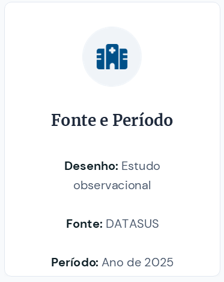
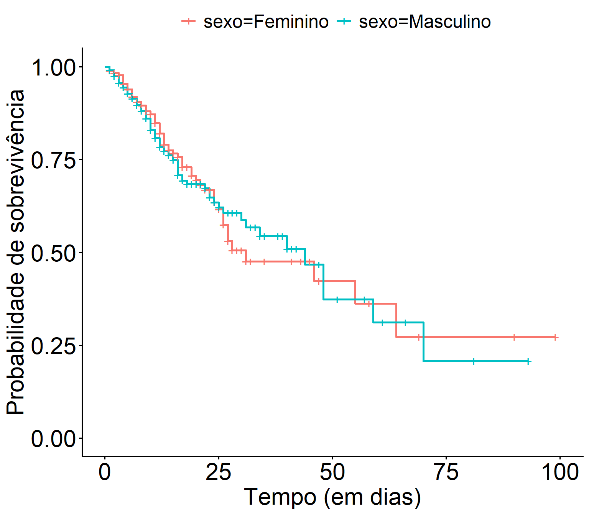

st3
📋Sumário
- Motivação
- Conjunto de dados
- Modelo de Cox com fragilidade
- Resultados e discussões
- Consideraçõs finais
- Principais referências

🗃️Conjunto de dados



🧱Construção da base de dados


🧱Construção da base de dados


🧱Construção da base de dados


🔎Variáveis observadas


🗨️Resultados e discussões



🔔Programa de pós-graduação
Matemática Aplicada e Computacional

@posmac_unesp
Inscrições: 15/09 à 16/10.
Matemática computacional e ciência de dados